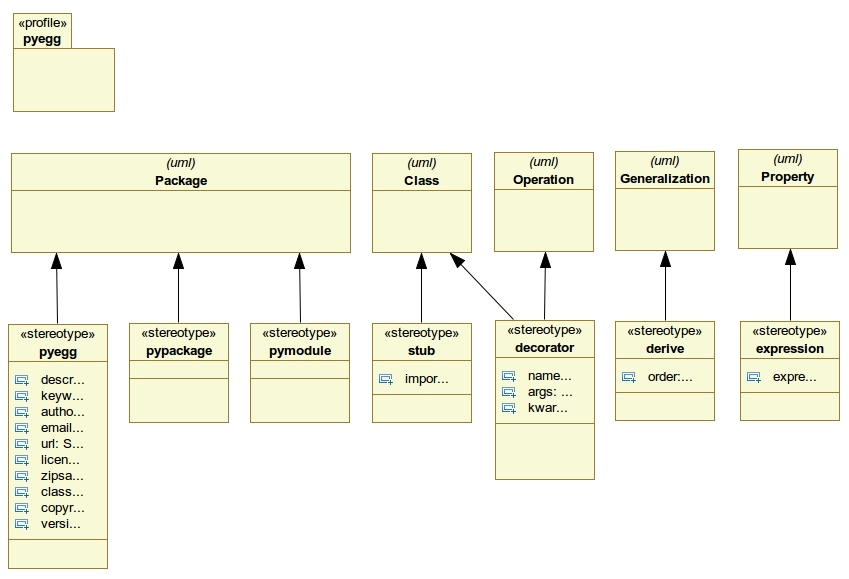

Table Of Contents
Previous topic
Foundations - UML, Profiles, AGX-Generators and more
Foundations - UML, Profiles, AGX-Generators and more
This document describes the pyegg UML profile.
Create or point at (reference and import) a complete python egg structure. A pyegg package can be given a dotted name. A split name represents namespace packages. Package directories are located in the src folder of the egg root. A README.txt is created if inexistent. setup.py is created or referenced.
Tagged Values:
Create or point to the directory with package name and create or point at a package’s __init__.py file.
Tagged Values: None
Treat package as python module. Thus create or point at a python file with a package name. All classes in this package are written into same module instead of creating module files for each class in a UML package if marked with pypackage.
Tagged Values: None
Indicate class as stub. Used for generalization of 3rd-party objects.
Tagged Values:
Define a python decorator.
If args and kwargs are omitted in the model, they’re never touched, change them in the generated code as you like.
Tagged Values:
Derive settings.
Tagged Values:
Set an expression for UML Property. Normally you do not model properties on python level, except they are useful for documentation or semantic reasons. Even if, value is set to None by default. Expression stereotype provides changing this.
Tagged Values: